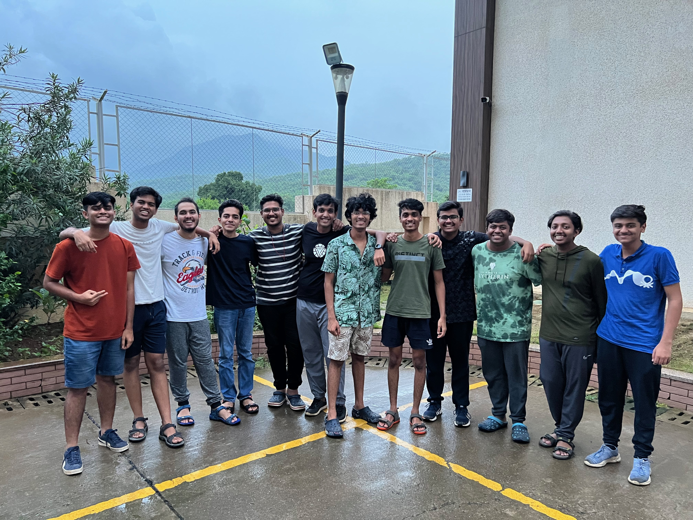
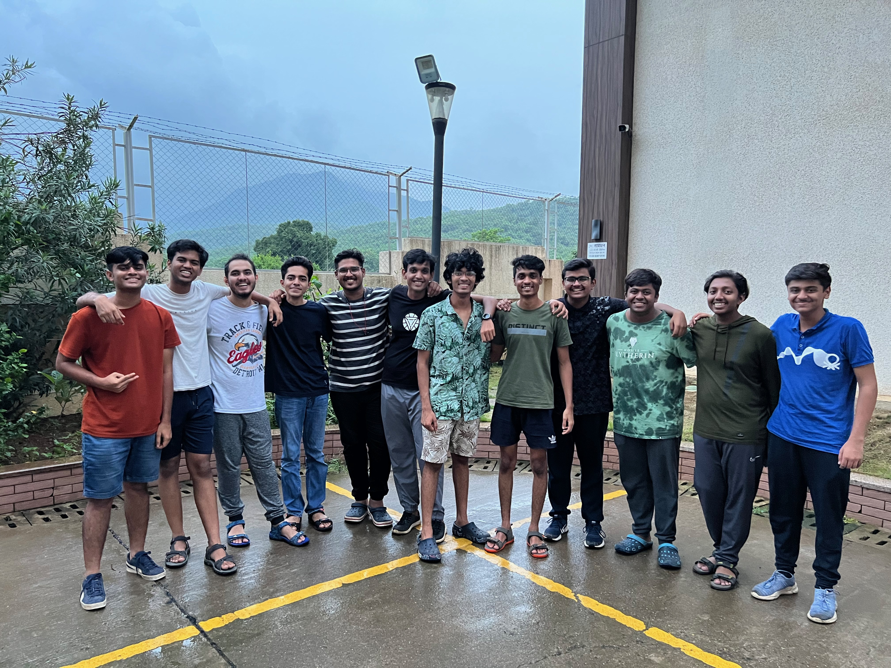

PHOTOS
 



ABOUT
Introducing Eshaan: A Master of All Trades.
Greetings! I am Eshaan, a twenty-year-old explorer of the fascinating realms of technology. Currently pursuing my B.Tech in Artificial Intelligence and Data Science at the esteemed KJ Somaiya Institute of Technology, I thrive in the world of coding and the marvels of AI.
When I'm not immersed in lines of code, you'll often find me indulging in a multitude of captivating hobbies. I channel my passion for physical prowess on the football field, where my agile moves mirror the complexity of algorithms. Writing becomes my muse, allowing me to paint vibrant stories with the strokes of my pen. Speaking of painting, I find solace in the realm of colors, where I create vivid and mesmerizing masterpieces on canvas.
But my love affair with knowledge extends beyond technology and artistic expression. Nature beckons me to explore its wonders, leading me on exhilarating treks where I find solace amidst towering mountains and lush landscapes. On clear nights, I turn my gaze to the heavens, reveling in the mesmerizing beauty of stargazing, where the universe unfolds its secrets.
So, come join me on this exciting journey as we unravel the mysteries of AI, code our way to innovation, and embrace the enchantment of nature. Together, let's carve a path towards a future where imagination and technology intertwine to shape a better world.

TIMELINE

Event 1
Description of Event 1.

Event 2
Description of Event 2.
PROJECTS

Project 1: Arcade Game Studio
Arcade Game Studio is a collaborative coding project developed by myself, Eshaan, and my partner, Yukta Makwana, using BlueJ. It features eight exciting games including hand cricket, tic tac toe, memory game, battleship, hangman, guess the number, and rock paper scissors. Each game is coded from scratch, offering a diverse and thrilling gaming experience. Join us in the Arcade Game Studio for hours of fun and challenge yourself with our captivating collection of games.

Project 2: Voice Assistant
Voice Assistant, coded in Python by myself and my partner Ninad Nagre, is a remarkable project that brings voice interaction and automation to your fingertips. With cutting-edge speech recognition and natural language processing, this intelligent assistant executes tasks effortlessly. From checking the weather to controlling smart home devices, Voice Assistant adapts to your needs and simplifies your interactions with technology. Experience the future of voice-driven automation and redefine the way you interact with your digital world.
SOCIALS